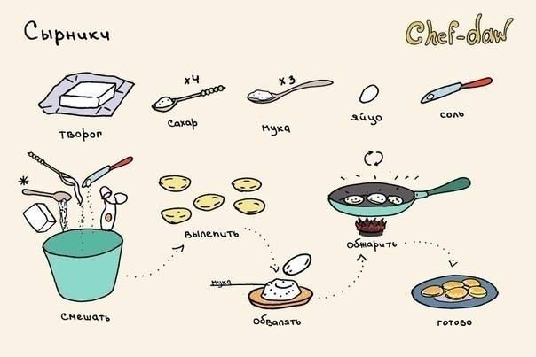
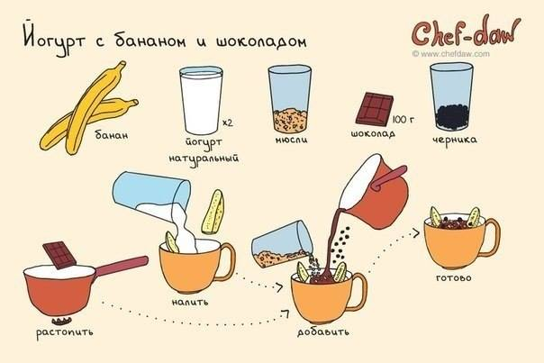
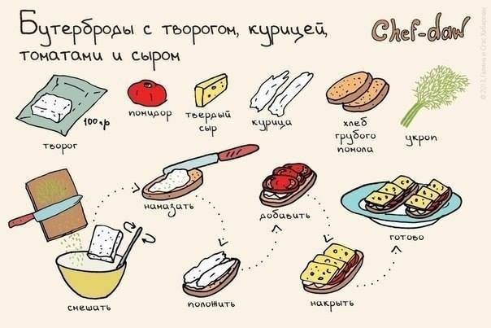
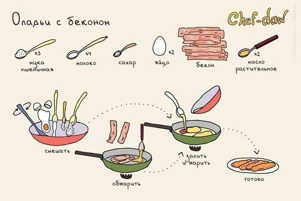
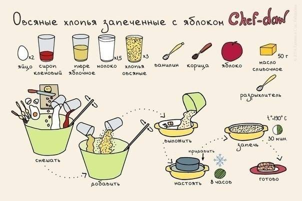
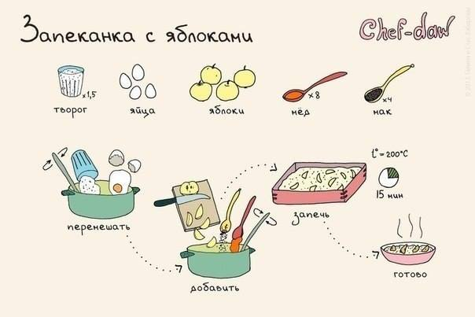
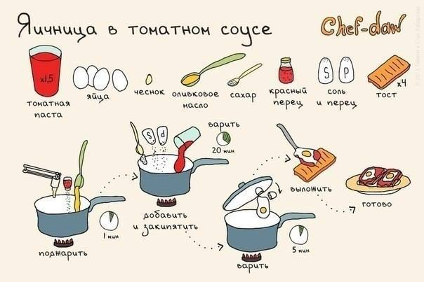
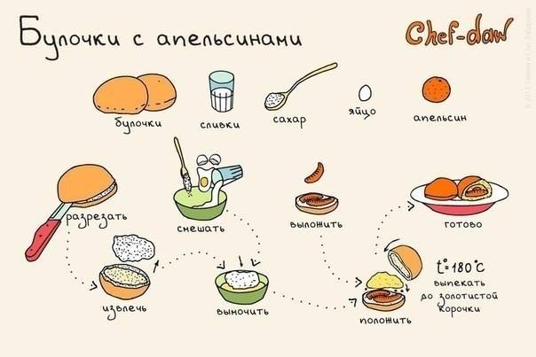

 Сырники  Йогурт с бананом и шоколадом  Бутерброды с творогом, курицей, томатами и сыром  Оладьи с беконом  Овсяные хлопья запученные с яблоками  Запеканка с яблоками  Яичница в томатном соусе  Булочка с апельсинами